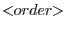
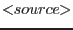

| Parameter | Mand | Type | Default | Constraints |
| evlist | yes | dataset | evlist.ds | |
The input filtered event dataset. It must contain the
EVENTS table and exposure map extensions. Not modified.
All other file names required by this task are inferred by default
from this one.
|
| srclist | no | dataset | | |
The input source definition dataset. It must contain the
SRCLIST table and the relevant selection region
extensions. Not modified. The default file name is inferred from
the input evlist name as: *SRCLI_????.* if there
are ten characters before the suffix, and otherwise just srclist.*.
|
| source | no | integer | | non-negative |
The INDEX number of an entry in the SRCLIST
table. This determines the incidence angle and selection regions.
The default value, zero, indicates the SOURCEID attribute of
the EVENTS table.
|
| order | no | integer | 1 | positive |
The reflection order number. This determines the energy selection
region.
|
| withspectrum | no | boolean | yes | |
Enables output of the source spectrum (parameter
spectrumset). The type of this spectrum is controlled by
parameter bkgcorrect.
|
| bkgcorrect | no | boolean | no | |
Enables background-correction of the source spectrum.
|
| spectrumset | no | dataset | | |
The output source spectrum dataset (OGIP-compliant format).
The default file name is inferred from the input evlist name
as: *SRSPEC

.* if there are
ten characters before the suffix, and otherwise just
src
o
.pha.
|
| spectrumbinning | no | choice | lambda | lambda beta |
Spectrum binning type. Used to accumulate the spectrum.
|
| withbkgset | no | boolean | yes | |
Enables output of the background spectrum (parameter bkgset).
|
| bkgset | no | dataset | | |
The output background spectrum dataset (OGIP-compliant format).
The default file name is inferred from the input evlist name
as: *BGSPEC
.* if there are
ten characters before the suffix, and otherwise just
bkg
o
.pha.
|
| rebin | no | integer | 1 | positive |
The channel rebinning factor. The events and exposure are
rebinned going into the histogram, which gives a more stable
result than if the full-resolution spectrum is rebinned later (a
very minor point).
|
| edgechannels | no | integer | 2 | non-negative |
The number of channels at the edges of each chip to be marked as
bad in the output QUALITY column. For reasons not well
understood at this time, the two channels at either edge of every
chip do not seem to be properly calibrated.
|
| exposed | no | real | 0.1 | 0-1 |
Channels with less than this fraction of full exposure are marked
as bad in the output QUALITY column.
|
| withfracexp | no | boolean | no | |
Enables addition of the non-standard (but harmless)
FRAC_EXP column to the output spectra. This is the
fraction of full exposure in each channel.
|
| badquality | no | integer | 1 | 0-5 |
The QUALITY column value used to indicate a bad channel.
The default causes bad channels to be discarded automatically by
XSPEC. Advanced users of XSPEC may prefer to change this for
diagnostic purposes.
|
| Parameter | Mand | Type | Default | Constraints |